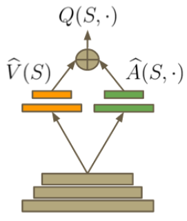

V. Mnih, K. Kavukcuoglu, D. Silver, A. A. Rusu, J. Veness, M. G. Bellemare, A. Graves, M. Riedmiller, A. K. Fidjeland, G. Ostrovski, S. Petersen, C. Beattie, A. Sadik, I. Antonoglou, H. King, D. Kumaran, D. Wierstra, S. Legg & D. Hassabis
Presented by Kai Arulkumaran / @KaiLashArul
2016-01-26
RL + Q-learning
Deep Q-networks
Experience replay memory
Double Q-learning
Dueling network architectures
Agent in an environment wants to max its cumulative reward
Learns through trial and error (no labels, just reward)
Reward is often sparse and delayed
Formulation: Set of states $S$ and set of actions $A$
Policy $\pi$ determines action $\mathbf{a}_t$ to perform given the state $\mathbf{s}_t$
Action $\mathbf{a}_t$ transitions $\mathbf{s}_t$ to $\mathbf{s}_{t+1}$ with scalar reward $r_{t+1}$
Problem may terminate (episodic), or not ($T = \infty$)
Cumulative reward is called the return $R = \sum\limits_{t=1}^T \gamma^{t-1}r_t$
Discount $\gamma$ in $[0, 1)$ makes future events less important
Goal: Maximise expected return given policy $\mathbb{E}[R|\pi]$
Goal: Learn action-value function $Q(\mathbf{s}, \mathbf{a}) = \mathbb{E}[R|\mathbf{s}, \mathbf{a}]$
Can define state-value function $V(\mathbf{s}) = \max\limits_{\mathbf{a}}Q(\mathbf{s}, \mathbf{a})$
With optimal function $Q^*$, simply pick $\arg\!\max$ action
Learn from experience (sample) at every step (bootstrap)
Update $Q$ based on error $\delta$, along with a learning rate $\alpha$
Update rule: $Q_{t+1}(\mathbf{s}_t, \mathbf{a}_t) = Q_t(\mathbf{s}_t, \mathbf{a}_t) + \alpha \delta$
Temporal difference error $\delta = Y - Q_t$;
difference between a target $Y$ and current value of $Q$
Target $Y = r_{t+1} + \gamma\max\limits_{\mathbf{a}}Q_t(\mathbf{s}_{t+1}, \mathbf{a})$;
reward received plus $\max$ discounted estimated Q-value
Reminder: $\max$ estimated Q-value is $V(\mathbf{s}_{t+1})$
Impractical to implement a lookup table for large $S$ or $A$
TD-Gammon
Neural fitted Q-iteration
$S$ can be large and continuous, but $A$ must be discrete
Process screen with standard convolutional layers
Don't input $a_t$, output $Q(\mathbf{s}, a)\ \forall a\in A$
Efficient - one forward pass for all Q-values
Utilises same learnt spatial representations
Two more additions to boost performance...
Function approximation in RL is unstable
Use separate policy and target networks
Policy networks acts; weights $\theta_{policy}$ change rapidly
Target network evaluates $Q(\mathbf{s}_{t+1}, a; \theta_{target})$ for $Y$
Update $\theta_{target} \leftarrow \theta_{policy}$ slowly
"Neuro-inspired" mechanism for replaying memories
Store $(\mathbf{s}_t, a_t, r_{t+1}, \mathbf{s}_{t+1})$ transitions in a (circular) buffer
Uniformly sample and perform Q-learning
Data-efficient and can use minibatch updates
Breaks strong temporal correlations from sampling online
Policy network acts, but target network estimates $V(\mathbf{s}_{t+1})$
Better estimate if policy network picks $\arg\!\max$ action
Target network then estimates value with chosen action
$Y_{DQN} = r_{t+1} + \gamma Q(\mathbf{s}_{t+1}, \arg\!\max\limits_a[Q(\mathbf{s}_{t+1}, a; \theta_{target})]; \theta_{target})$
$Y_{DDQN} = r_{t+1} + \gamma Q(\mathbf{s}_{t+1}, \arg\!\max\limits_a[Q(\mathbf{s}_{t+1}, a; \theta_{policy})]; \theta_{target})$
Advantage function $Adv(\mathbf{s}, \mathbf{a}) = Q(\mathbf{s}, \mathbf{a}) - V(\mathbf{s})$
$V$ represents importance of being in state $\mathbf{s}$
$Q$ evaluates importance of different actions chosen from $\mathbf{s}$
Thus $Adv$ provides a relative measure of actions in $\mathbf{s}$
Insight is that sometimes actions don't matter so much
For bootstrapping in RL, a good estimate of $V$ helps
Therefore decouple into value and advantage streams
Function built into the architecture (e.g. ResNets)
Can visualise what triggers activations in both streams
Shallow reinforcement learning
All images/videos © Atari, Inc. and Google DeepMind